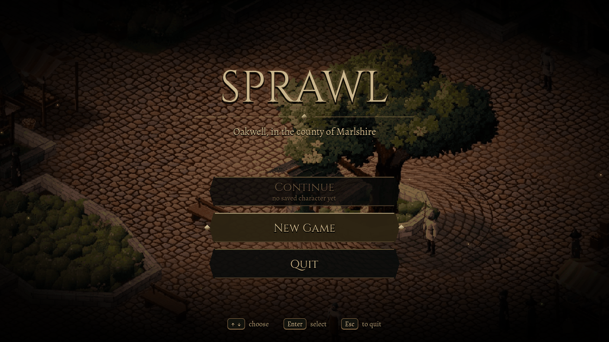
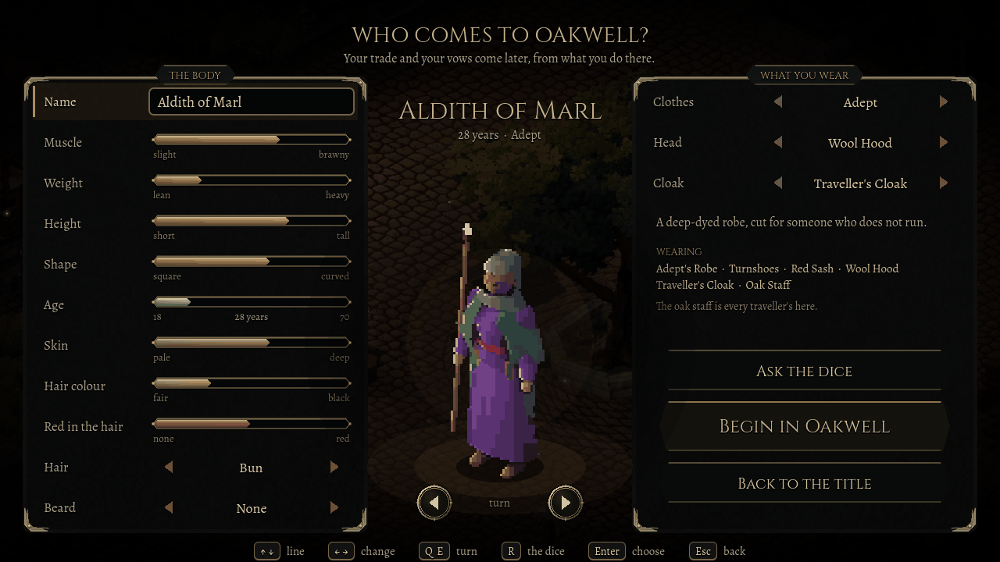
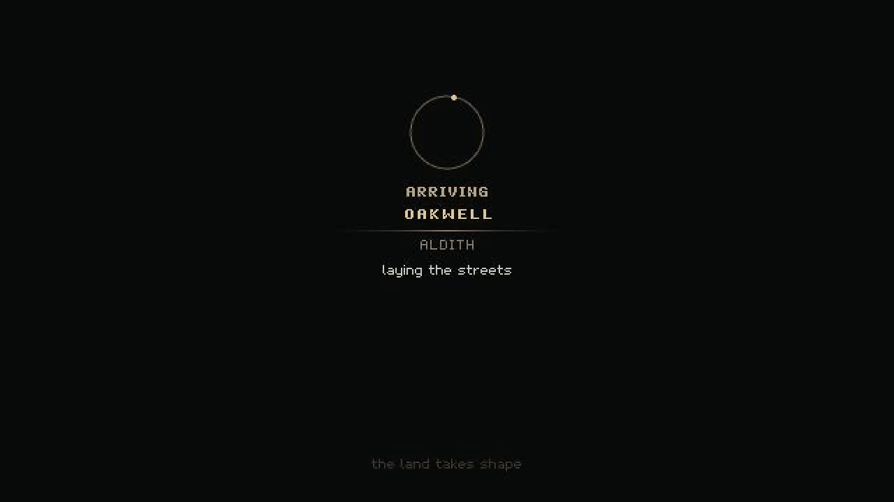
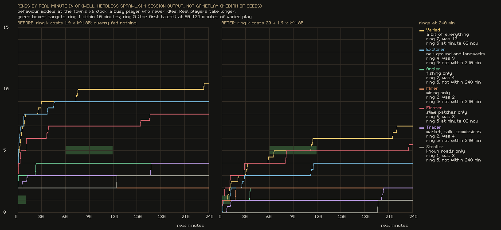
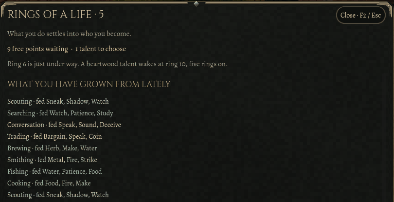
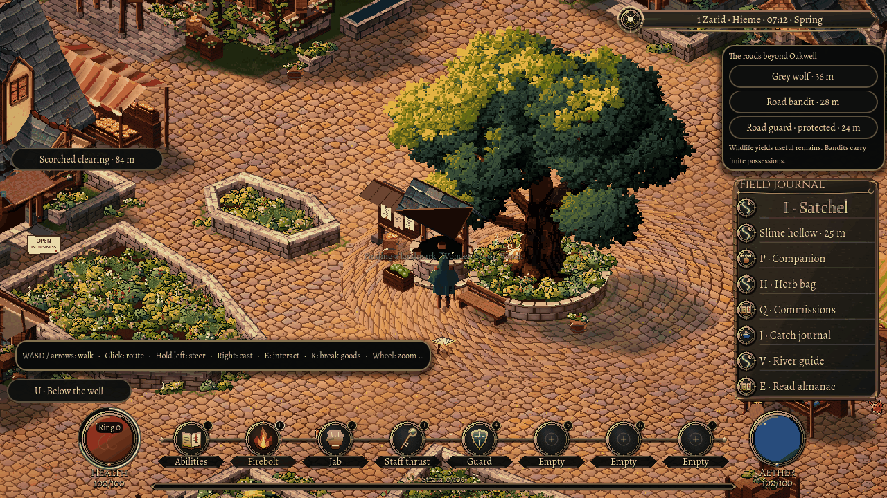

6 November 2026
Who comes to Oakwell?
Sprawl now opens on a title screen. You can shape the person who arrives, and the game shows you how what you do in Oakwell changes them.
Until this week, launching Sprawl dropped you straight into Oakwell's square as the same hooded traveller every time. Now the game opens on a title. The square lies dimmed behind it, and there are three choices: Continue, New Game and Quit. Continue names who it will bring back and the day they had reached. With no saved character it is greyed out and says so, and nothing can select it.

A body of your own
New Game opens the character creator. Everyone in Sprawl is built from the same procedural body, shaped by sliders, so the creator gives you those same sliders: muscle, weight, height, shape and an age from 18 to 70, then skin, hair colour, red in the hair, a hair style and a beard. Six starting outfits are made from clothes already in the game, from the Forester's to the Pilgrim's, with a choice of head piece and cloak on top. The figure in the middle is drawn by the same renderer as the townsfolk, and you can turn it to see every side. Type a name or ask the dice, then choose Begin in Oakwell.

There is no class to pick. Your trade and your vows come later, from what you actually do in town. Every outfit keeps the traveller's oak staff, because the town's first fighting style is built on it. The arrival card then names you, and you walk out into the square as the person you made.

Oakwell is the same permanent town in every life, so New Game starts a new life in it rather than a new world. If a character already exists, the game asks before going on. Nothing is thrown away: the previous life's files are set aside in a folder of their own, with a note explaining how to bring them back.
Growth you can read
Rings around the health vial arrived a week ago, to show essence gathering as you live. Measured against Oakwell itself, they came too quickly at first and then stalled. Simulated players, run minute by minute without the game engine, were at ring eight within ten minutes and then had little left to earn. Each ring now has a minimum cost. A busy model player who does a bit of everything reaches the first ring in about two minutes and the first talent, at ring five, in about an hour. Walking alone takes around three hours to earn a ring.

Those are measurements of simulated players, not people. The first human sessions will show whether the pace feels right. Characters saved before the change keep every ring they had already reached; only the rings beyond them follow the new curve.
When something you do feeds you, a small caption over your head now names it, such as Trading feeding Bargain, Speak and Coin. Rings of a Life, the character sheet, now also lists what you have grown from lately, the vows you hold and which way they lean your next points, and the work you have taken up.

Room on the screen
The field journal on the right used to sit underneath the roads panel, which covered it and took its clicks. On a desktop screen the two now stack. On a small screen only one shows at a time: the journal during ordinary town life, and the road guide when something dangerous is close.

All of this was checked in the running game with automated keys and clicks, at three screen sizes. Equipment comes next, so that something you pick up in play can be worn, shown on your figure and saved.